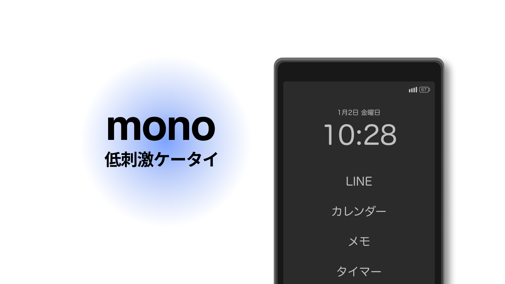
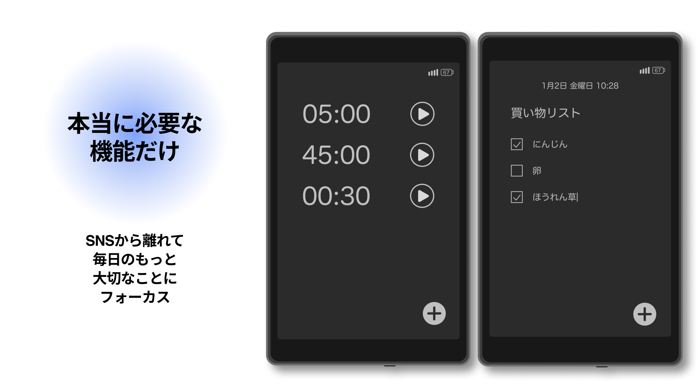
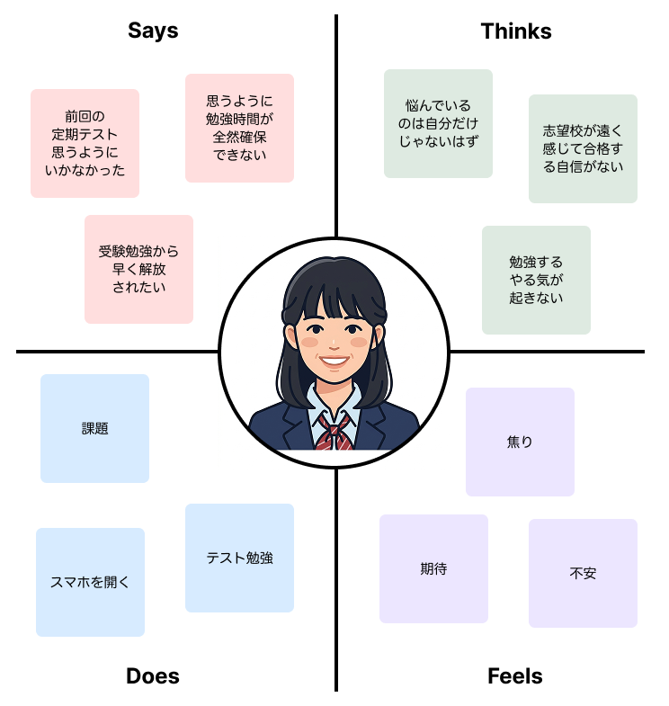
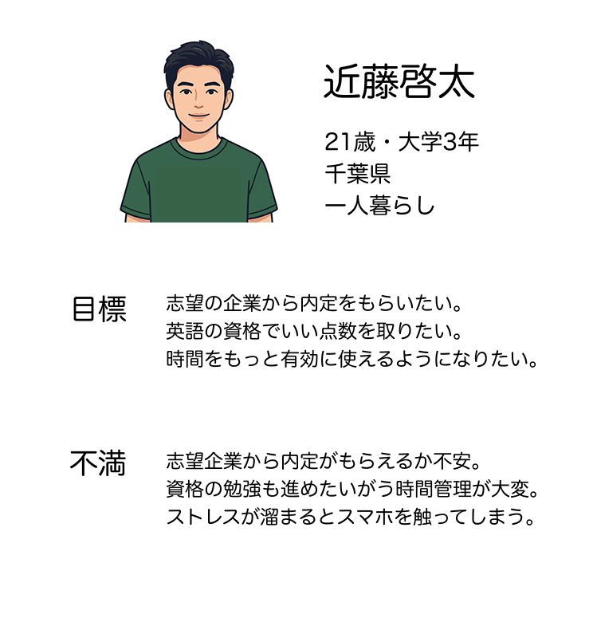
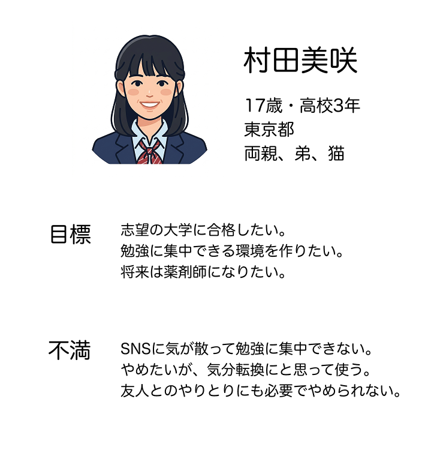
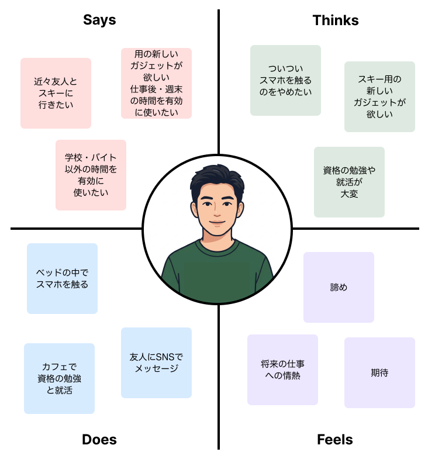
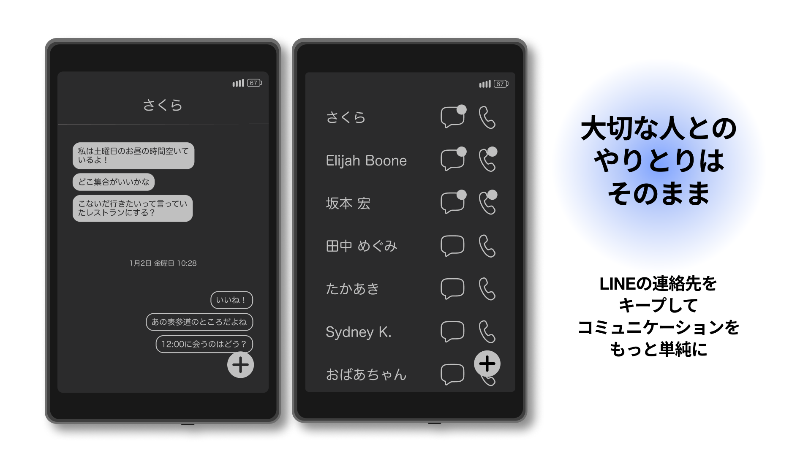
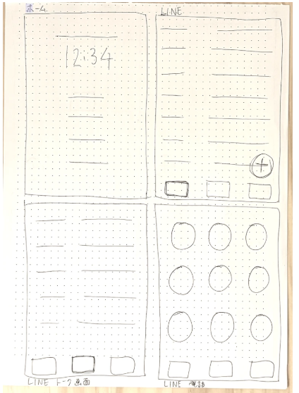
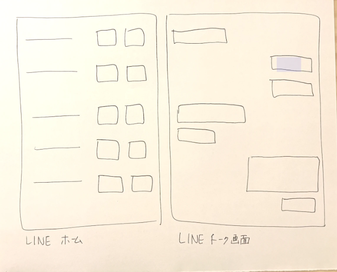

UX Case Study
Mono: Low-Stimulation Phone
Phone that enables people to focus on what actually matters without distractions.

THE PROBLEM
High school and university students struggle to stop using their phones, even when they want to.
The Solution
Mono: a non-addictive mobile phone.
Instead of functioning as a tool for avoiding responsibilities, mono supports users in focusing on what they need to do.
Key Features
- Mono is designed so that distracting social media applications cannot be downloaded. Only essential functions, such as a timer, notes, and a calendar, are included.
- Mono acts as a supporting tool in daily life, allowing users to focus more of their time and energy on tasks that genuinely matter.
- Because LINE is an essential communication platform in Japan, it was not removed entirely. Instead, only its core messaging and calling functions were retained. All other features were removed, and the interface was redesigned to provide a low-stimulation user experience.

1. User Research
- More than 98% of high school students and 97% of university students use social media. (TesTee Lab, 2024)
- High school students spend an average of 6 hours and 44 minutes online on weekdays, the highest recorded average to date. (Asahi Shimbun, 2026)
- Approximately 30% of university students spend around six hours per day on their smartphones. (University Student Advertising Navi, 2024)
Based on the findings, the target users were defined as digitally native high school and university students with heavy smartphone usage habits.




Problem Definition
The user research identified several recurring patterns:
- Users have important tasks that require sustained focus and affect their future, such as entrance exams and job hunting.
- They experience anxiety and uncertainty about the future.
- They struggle to begin tasks and instinctively turn to their smartphones instead.
The findings suggest that smartphones are being used less as productivity tools and more as a means of escaping anxiety. It became clear that for such users, conventional smartphones function as tools for avoiding anxiety.
HMW Questions
Based on the problem definition, the following HMW questions were developed to guide the ideation process:
- How might we help students focus more effectively on studying and job hunting?
- How might we create an environment that discourages excessive smartphone use?
- How might we help users balance what they want to do with what they need to do?
Among these, the second question became the primary focus because smartphone addiction appeared to be the core issue underlying the personas' struggles:
"How might we create an environment that discourages excessive smartphone use?"

2. Wireframes
The home screen, notes, and calendar interfaces were designed with only essential features, minimizing the number of icons and interface elements.
The LINE interface initially included bottom navigation similar to conventional smartphone applications. However, to reduce interaction steps further, the design was revised so users could directly access calls and chats from the home screen.



3. Reflection
Successes
- The project successfully achieved its goal of creating a "non-addictive mobile phone."
- The design addressed smartphone addiction by creating a device intended to be used only when necessary.
- The user flow design process helped minimize the number of interactions required throughout the interface.
Areas for Improvement
- Competitor research should have been included. Comparing existing products may have led to additional insights for reducing stimulation further.
- The project ultimately became the design of a completely new hardware device rather than a web or app-based solution. Purchasing a new device requires financial commitment, which may reduce accessibility for high school and university students.
- Future iterations should consider user accessibility and practical constraints more carefully during the design process.